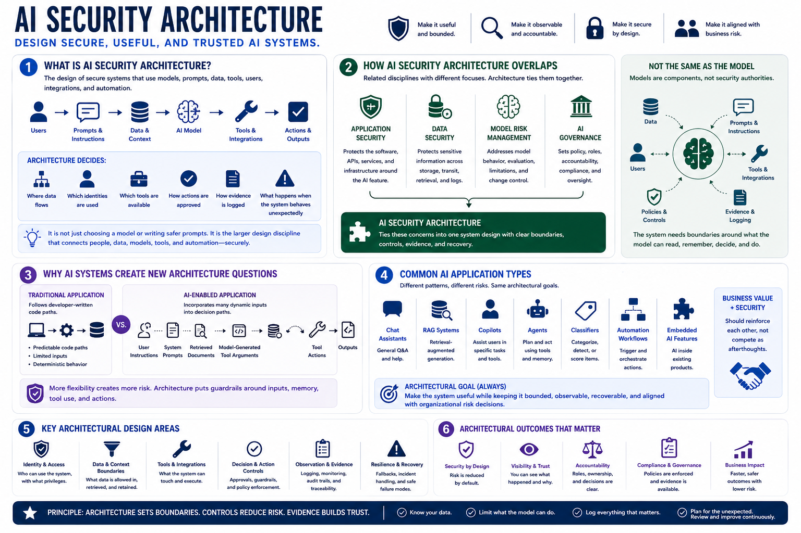

What AI Security Architecture Means
Connecting to LMS... Progress: in progress

Narration
AI security architecture is the design of secure systems that use models, prompts, data, tools, users, integrations, and automation. It is not just choosing a model or writing safer prompts. It is the larger design discipline that decides where data flows, which identities are used, which tools are available, how actions are approved, how evidence is logged, and what happens when the system behaves unexpectedly.
AI security overlaps with application security, data security, model risk management, and AI governance, but it is not identical to any one of them. Application security protects the software and services around the AI feature. Data security protects sensitive information across storage, transit, retrieval, and logs. Model risk management addresses model behavior, evaluation, limitations, and change control. Governance sets policy, accountability, and oversight. Architecture ties those concerns into one system design.
AI systems create new architecture questions because instructions, context, memory, retrieval, and tool use can affect outcomes. A traditional application usually follows code paths written by developers. An AI application may incorporate user instructions, system prompts, retrieved documents, model-generated tool arguments, and prior memory into a decision path. That does not make the model a security authority. It means the system needs boundaries around what the model can read, remember, decide, and do.
Common AI application types include chat assistants, retrieval-augmented generation systems, copilots, agents, classifiers, automation workflows, and embedded AI features inside existing products. Each pattern has different risks, but the architectural goal is stable: make the system useful while keeping it bounded, observable, recoverable, and aligned with organizational risk decisions. Business value and security should reinforce each other, not compete as afterthoughts.